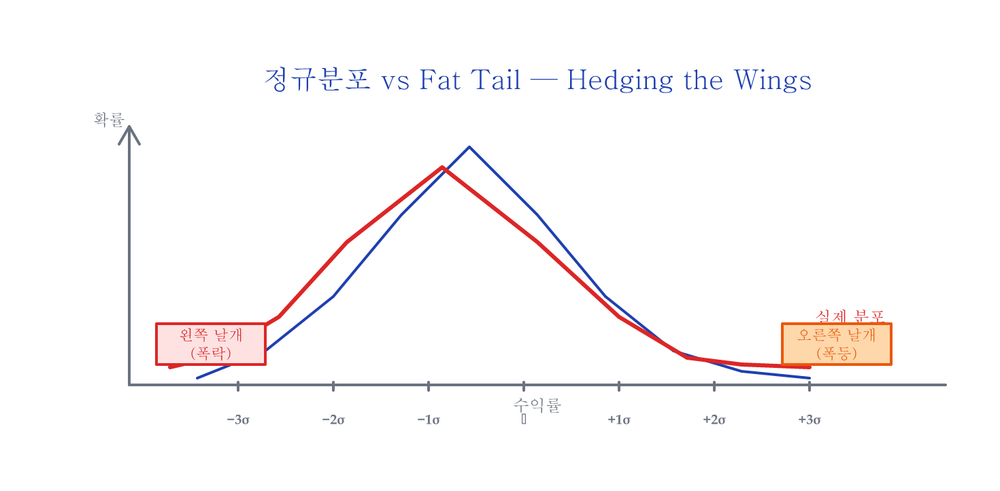
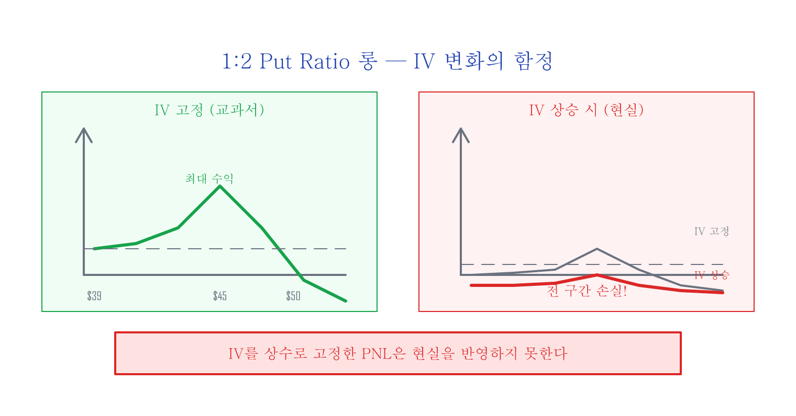
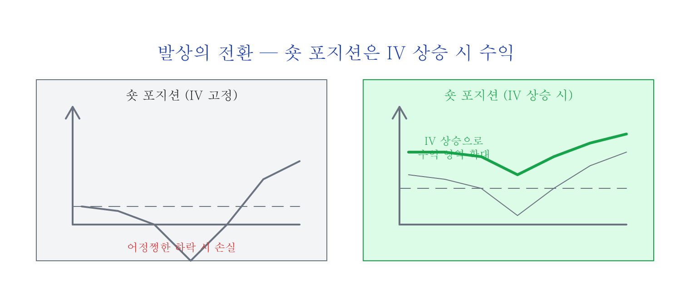
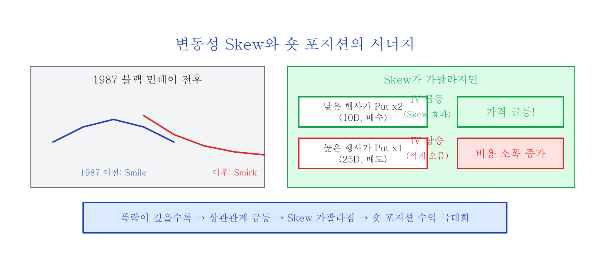
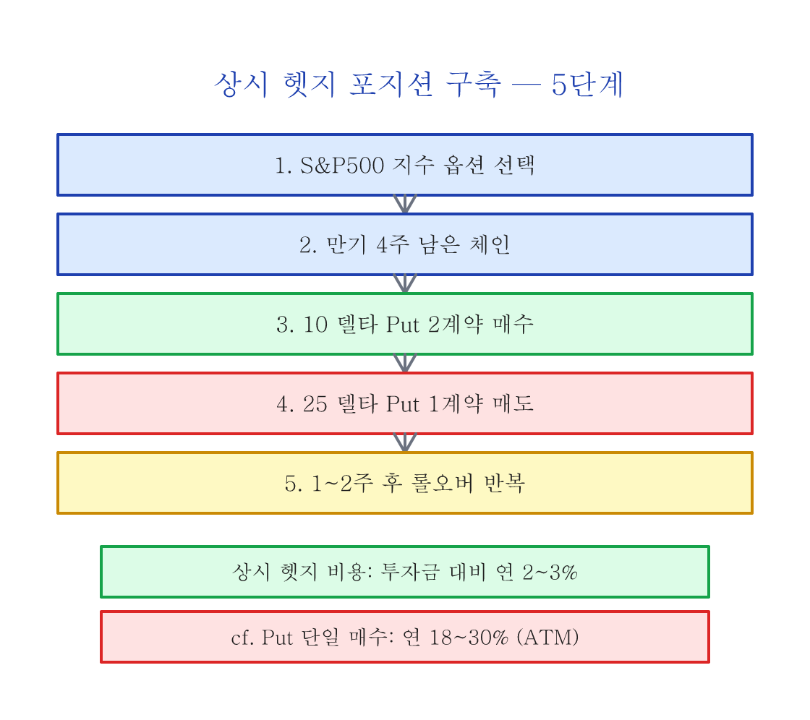

Hedging the Wings — 저비용 테일 리스크 헷지¶
이 글은 Hari P. Krishnan의 The Second Leg Down: Strategies for Profiting after a Market Sell-Off (Wiley, 2017)의 핵심 내용을 요약·정리한 것입니다.
이 글을 읽기 전에¶
다음 개념을 이해하고 있으면 이 글을 따라가기 쉽습니다:
| 사전 지식 | 수준 | 설명 |
|---|---|---|
| Put 옵션 | 필수 | 특정 가격에 팔 수 있는 권리 (= 하락 보험) |
| 내재변동성(IV) | 필수 | 옵션 가격에 녹아든 시장의 변동성 기대치 |
| 델타(Delta) | 필수 | 주가 $1 변동 시 옵션 가격 변동폭 (10D = ITM 확률 ~10%) |
| Spread | 권장 | 두 개 이상의 옵션을 조합한 전략 |
| 변동성 Skew | 권장 | 이전 글 — 지수 옵션의 IV가 왜 비대칭인지 |
정규분포와 Fat Tail¶
주가의 수익률은 이론적으로 정규분포(벨 커브)를 따른다고 가정하지만, 현실에서는 평균에서 3~5 시그마(표준편차 — 평균에서 얼마나 벗어났는지를 나타내는 단위) 바깥의 극단적 사건이 이론보다 훨씬 자주 발생합니다.

| 시그마 | 정규분포 이론 확률 | 실제 시장에서는? |
|---|---|---|
| 3 시그마 | 0.3% (1000일에 3번) | 훨씬 더 자주 |
| 4 시그마 | 0.006% (거의 불가능) | 2008 금융위기, 2020 코로나 |
| 5 시그마 | 0.00006% | 1987 블랙 먼데이 (하루 -22%) |
분포 그래프의 양 끝이 마치 날개처럼 생겨서, 이 "뚱뚱한 꼬리(Fat Tail)" 부분을 보호하는 것을 "Hedging the Wings"라고 합니다. 매달 내는 자동차 보험처럼 사고가 나지 않아도 계속 유지하는 보험입니다. 핵심 조건: - 테일 이벤트는 언제 올지 모르므로 상시 헷지 유지 필요 - 따라서 반드시 저비용이어야 함
실행 난이도 안내: 이 전략은 옵션 경험이 있는 투자자를 대상으로 합니다. SPX 지수 옵션 또는 SPY ETF 옵션으로 실행 가능하며 (SPY는 계약 단위가 작아 개인투자자에게 접근하기 쉽습니다), 아래 이유로 일반 개인투자자에게는 실행이 쉽지 않습니다:
- 멀티 레그 관리: 2개 이상의 옵션 포지션 동시 관리 + 롤오버 필요
- 슬리피지(주문 체결 시 가격 차이): 각 레그마다 매수-매도 호가 차이(bid-ask spread) 발생, OTM put에서 특히 심화
- 어정쩡한 하락 구간: 완만한 하락 시 손실 가능
핵심 아이디어: 1:2 Put Ratio Spread¶
구조¶
1:2 Put Ratio Spread는 행사가가 다른 put 옵션 2종류를 조합하는 전략입니다:
| 포지션 | 높은 행사가 Put (25D) | 낮은 행사가 Put (10D) |
|---|---|---|
| 롱 | 1계약 매수 | 2계약 매도 |
| 숏 (이 글의 핵심) | 1계약 매도 | 2계약 매수 |
쉽게 말하면: - 롱 = "비싼 보험 1개 사고, 싼 보험 2개 팔기" → 보험료 차이로 수익 추구 - 숏 = "비싼 보험 1개 팔고, 싼 보험 2개 사기" → 폭락 시 싼 보험 2개가 폭등
SPY로 보는 구체적 예시¶
SPY가 $540일 때:
| 레그 | 행사가 | 델타 | 매매 | 가격 (예시) |
|---|---|---|---|---|
| 레그 A | $510 (25D) | -0.25 | 1계약 매도 | $4.50 수취 |
| 레그 B | $490 (10D) | -0.10 | 2계약 매수 | $1.80 x 2 = $3.60 지불 |
| 순비용 | $0.90 수취 (크레딧 — 받는 돈) |
이 포지션은 진입 시 $0.90 크레딧(받는 돈)을 수취하면서 시작합니다. 만기 4주 후 상황별 결과:
| 시나리오 | SPY 가격 | 결과 | 예상 손익 |
|---|---|---|---|
| 횡보/소폭 상승 | \(535~\)550 | 모든 옵션 소멸 | +$0.90 (크레딧) |
| 완만한 하락 (-3%) | $524 | $510 put OTM 유지 | +$0.90 |
| 위험 구간 (-5~7%) | \(503~\)513 | $510 put ITM, $490 put OTM | -\(3~\)7 |
| 급락 (-10%) | $486 | $490 put 2개 > $510 put 1개 | +\(5~\)10 |
| 폭락 (-20%) | $432 | 2개 매수 put 폭등 | +$30+ |
위험 구간 (-5~7%)에 주의: SPY가 $510 근처에서 멈추면 매도한 $510 put만 내가격(ITM: In The Money)이고 매수한 $490 put은 OTM인 "데드 존"에 빠집니다. 이 구간의 최대 손실은 매도한 $510과 매수한 \(490의 행사가 차이(\)20) - 크레딧($0.90) = 약 $19.10 (계약당)입니다. 이것이 이 전략에서 가장 불리한 시나리오이며, 만기 전 롤오버로 회피해야 하는 이유입니다.
왜 숏 포지션인가? — IV 변화의 마법¶
롱 포지션의 함정¶

이전 글에서 다뤘듯이, 교과서 PNL은 변동성이 변하지 않는다고 가정하여 IV를 상수로 고정하고 그립니다. 하지만 실전에서는 시장이 흔들리면 IV가 상승하고, 롱 포지션은 거의 전 구간에서 손실이 발생합니다.
숏 포지션 — IV 상승이 아군¶

숏 포지션은 IV가 올라가면 수익입니다. 테일 이벤트에서 IV가 슈팅하면 PNL이 수익 쪽으로 이동합니다.
IV 변화 시나리오 (SPY $540 기준, 만기 2주 전)¶
| VIX 변화 | IV 변화 | 레그 A (매도 1개) 손익 | 레그 B (매수 2개) 손익 | 합산 |
|---|---|---|---|---|
| VIX 15 → 15 (불변) | 0 | +$0.30 (시간가치 감소분(theta) 수익) | -$0.20 (theta 비용) | +$0.10 |
| VIX 15 → 25 (+10) | +10pt | -$2.00 | +$3.50 | +$1.50 |
| VIX 15 → 40 (+25) | +25pt | -$5.00 | +$12.00 | +$7.00 |
VIX가 15에서 40으로 슈팅하면(2020 코로나 수준), 매수한 10D put 2개의 가격이 매도한 25D put 1개보다 훨씬 더 빠르게 올라갑니다. Skew 효과로 낮은 행사가(10D)의 IV가 더 많이 상승하기 때문입니다.
변동성 Skew의 시너지¶

폭락 시 변동성 Skew가 가팔라지면 추가 이점:
- IV 상승: 전체 옵션 가격 상승 → 매수 2개가 매도 1개보다 더 수혜
- Skew 가팔라짐: 낮은 행사가(10D) put의 IV가 높은 행사가(25D) put보다 더 많이 상승
결과: 폭락이 깊을수록 헷지 성능이 기하급수적으로 강화
왜 10 델타 Put인가?¶
| 항목 | 10 델타 Put | 25 델타 Put |
|---|---|---|
| 주간 손해 (보험료) | 작음 | 큼 |
| 헷지 성능 (폭락 시) | 양호 | 약간 더 좋음 |
| 비용 효율 | 더 높음 | 낮음 |
| 기관 수요 | 적음 | 매우 높음 → 항상 비싸게 거래 |
| IV vs 실현변동성(RV: Realized Volatility) | 비교적 공정하게 거래 | IV > RV (옵션이 이론보다 비싸게 거래) |
25D put은 기관 수요 때문에 항상 비싸게(= 과대 평가) 거래됩니다. 따라서 25D를 매도하고 상대적으로 저평가된 10D를 매수하는 구조가 비용 효율적입니다.
실전 구축: 5단계¶

| 단계 | 내용 | 구체 예시 (SPY $540 기준) |
|---|---|---|
| 1 | S&P500 옵션 선택 | SPY (개인) 또는 SPX (기관) |
| 2 | 만기 4주 남은 옵션 체인 | 28일 후 만기 옵션 |
| 3 | 10D put 2계약 매수 | SPY $490 put x 2 |
| 4 | 25D put 1계약 매도 | SPY $510 put x 1 |
| 5 | 1~2주 후 롤오버 | 기존 포지션 청산 → 새 4주 만기로 재진입 |
비용 비교¶
| 헷지 방법 | 연간 비용 | 폭락 시 수익 구조 | 비고 |
|---|---|---|---|
| ATM put 상시 매수 | 18~30% | 선형 (1:1) | 극도로 비쌈 |
| 10D put 상시 매수 | 1.5~2% | 선형 (1:1) | 대부분 만기 소멸 |
| 1:2 Put Ratio 숏 | 2~3% | 볼록(Convex) — 떨어질수록 수익 가속 | 폭락이 깊을수록 가속 수익 |
"10D put이 1.5~2%인데 왜 더 비싼 2~3%짜리를 쓰는가?"
핵심 차이는 수익 구조입니다. 10D put 단일 매수는 주가 하락에 비례해서 선형으로 수익이 나지만, 1:2 ratio 숏은 IV 상승 + Skew 가팔라짐의 두 효과가 복합 작용하여 폭락이 깊을수록 가속적으로 수익이 커집니다 (볼록성/Convexity). 2008년이나 2020년 같은 -30% 이상 폭락에서 10D put 단일 매수 대비 2~5배의 수익이 가능합니다. 연 0.5~1% 추가 비용으로 테일 이벤트에서의 헷지 성능이 기하급수적으로 강화되는 것입니다.
마무리¶
| 시장 상황 | 1:2 숏 포지션 반응 | 이유 |
|---|---|---|
| 횡보/소폭 상승 | 소폭 수익 (크레딧) | theta + 옵션 소멸 |
| 완만한 하락 (-3~7%) | 소폭 손실 가능 | 25D put이 ITM 근접 |
| 급락 (-10%+) | 수익 | IV 상승 + Skew 효과 |
| 폭락 (-20%+) | 큰 수익 | 두 효과 기하급수적 강화 |
핵심 원리: 비싼 보험(25D)을 팔고 싼 보험(10D) 2개를 사서, 평상시에는 보험료 차이로 비용을 줄이고, 폭락 시에는 싼 보험 2개가 폭등하여 헷지 성능을 발휘합니다.
마지막 팁: 이미 폭락이 시작된 후 뒤늦게 헷지가 필요하다면, put 단일 매수 대신 1:2 put ratio "롱" 포지션을 고려하세요. 이 글에서 설명한 롱 포지션의 단점들이 오히려 장점으로 작용합니다. 이미 IV가 높은 상태에서는 IV가 더 올라갈 여지가 적고 내려올 가능성이 크므로, 롱 포지션의 IV 하락 방향 성향이 오히려 유리하게 작용합니다.
참고문헌: Hari P. Krishnan, The Second Leg Down: Strategies for Profiting after a Market Sell-Off, Wiley Finance Series, 2017. ISBN 978-1119219088.